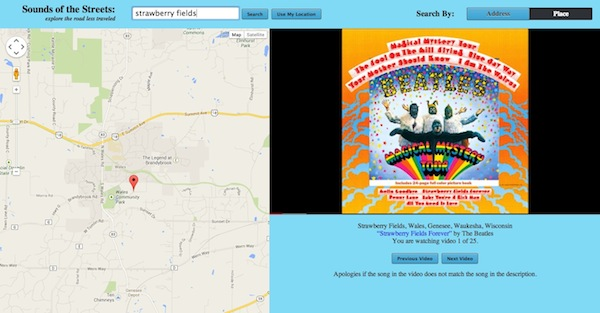

About
Hi, I'm Zachary. I study Computer Science at Cornell University, in the School of Engineering. My interests include software development, computer vision, and graphics — as well as art, music, and design. I'm also a member of the Cornell Chai Notes, an A Cappella group on campus. What more you say? I enjoy solving twisty puzzles like the Rubik's cube, and love to bodyboard at the beach.
Interested? See my resume or check out my recent projects below. If you want, you can also email me.
Projects
-
Sleepy Bob: 2013 Winner of the Cornell Google Game Jam

DEMO
Sleepy Bob is a parallax sidescrolling game with dreamy graphics and lifelike ragdoll physics.
Bob is sleepwalking and he needs your help! The goal is to navigate him to the bed without waking him up. Bob starts waking up if you shake him too much, or if he hits the objects around him.
Built in less than 24 hours, Sleepy Bob utilizes Box2D.js and jQuery, and was originally deployed using a Flask (python) backend.
-
Poem Generator: Presented at Google
DEMO
Poem Generator is an online tool for creating computer-generated poems, as well as a social platform for sharing these poems with the community. With Poem Generator, users can generate sonnets, haikus, free-verse, and rhyming poems — or poems in the style of famous poets like Shakespeare and Edgar Allan Poe. The most recently generated poems are automatically displayed on the site's home page, and users can even share their poems via facebook. So sign up, log in, and get started!
Poem Generator is powered by Flask, MongoDB, and NLTK. The poem generation engine uses NLTK as a rhyming library and syllable counter, and implements Markov chaining on a corpus of text to emulate various poets' styles.
Check out the generator or visit the Github project instead.
-
Sounds of the Streets
DEMO
Sounds of the Streets is an inventive way of discovering new songs. Have you ever been in a famous location and wanted to hear the songs written about it? Or maybe you're on a road trip and want to listen to a playlist about the areas you pass through. Sounds of the Streets does all of this for you, and more. Input a location, whether it be your current GPS or Wifi-determined location, or one you search for manually, and Sounds of the Streets will find the popular songs relating to that area. It works by determining the nearest relevant landmark, street, state, or country, and finding songs referencing that place in the title. Then it finds the music video on YouTube and starts playing it for you.
Built with the Google Maps, YouTube, and Last.fm APIs, as well as Flask for a python backend.
Show me the site and the source code!
-
StuyDash

DEMO
StuyDash is a dashboard web application with everything a Stuyvesant High School student needs to know about his or her day. From the bell schedule widget to the weather, StuyDash knows it all.
StuyDash works by screen-scraping the confusing and unappealing Stuyvesant website and displaying the useful stuff in an intuitive way. StuyDash's main feature is a widget that intelligently displays the correct bell schedule for the day, giving a quick and easy view of what period it is at the moment. It also incorporates recent school news and the current weather. On top of this, StuyDash features links to the most necessary and useful outside websites for quick access to even more information.
There's more? StuyDash is even more accessible, providing a 24-hour automated hotline that users can call to get the most recent information. In addition, users can text queries to StuyDash and get the day's info all while they commute to school.
The StuyDash website uses Flask for a python backend, and is made beautiful with jQuery animations and CSS. The StuyDash text and phone interface is powered by Twilio.
Visit the website or the Github project!